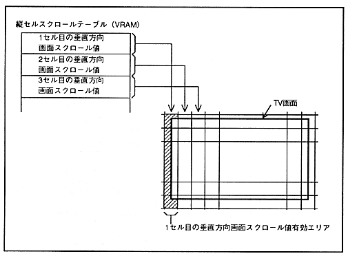

The vertical cell scroll function is a function that can specify the screen scroll value in the vertical direction for each area divided vertically in units of cells in the horizontal direction, and it is specified in the vertical cell scroll table stored in VRAM. The data value of the vertical cell scroll table is specified as a relative value. The value specified in the screen scroll value register is added to the screen scroll value stored in the vertical cell scroll table, and it becomes the display coordinates. When displaying in bitmap format, it can be specified in units of 8 dots in the horizontal direction.
In the normal scroll screen, only NBG0 and NBG1 have the vertical cell scroll function. This vertical cell scroll function and mosaic function cannot be used at the same time, and the mosaic function has priority.
The vertical cell scroll function is shown in Figure 5.6.
Figure 5.6 Vertical cell scrolling function

The bit configuration of the vertical screen scroll value is the same as when setting each register. In addition, the data of the vertical cell scroll table is a table in order from the data for the left cell of the TV screen.
If both NBG0 and NBG1 use the vertical cell scroll function, store the vertical cell scroll table data alternately for each cell in the order for NBG0 and NBG1.